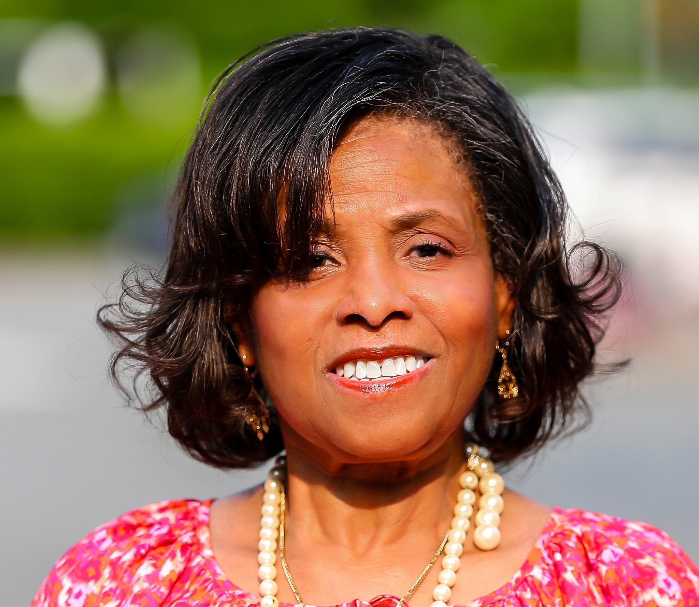

Meet Our Team
Kim Alfonso, MBA
Co-Founder & CEO
Kim Greenfield Alfonso is a co-founder and Chief Executive Officer of Results One LLC. Kim brings over 30 years of experience and knowledge in working with public, private, state, and local governments in the Washington, DC Region. After a successful career in the nonprofit and corporate arena, Kim knows that a diverse workforce is critical to the success of all organizations, and diversity and inclusion are the cornerstones of a productive environment. In addition, Kim has extensive experience working with people with disabilities and is an expert in the disability and accessibility arena.
Kim obtained both a Bachelor’s in Economics from the Wharton School of the University of Pennsylvania and a Master’s degree in Business Administration (MBA) from Northwestern University’s J.L. Kellogg Graduate School of Management.
Kim is involved in working on transformative initiatives in Washington, DC, and is currently a board member of the Greater Washington Black Chamber of Commerce, Chair of the Engagement Advisory Board for Washington Gas, and serves on the DC Water Business Diversity and Inclusion Advisory Council. In addition, Kim serves on the Leadership Council for the National Small Business Association and the DC Women’s Business Center Advisory Board.
DC Mayor Muriel Bowser also appointed Kim to serve as Chair of Small Business and Personal Services for the Mayor’s Re-Opening DC Advisory Group and selected by the Mayor to serve as Co-Chair of Age-Friendly DC, a committee dedicated to making Washington, DC a livable community for people of all ages.
A strong proponent of the disability community, she was selected as one of the “Women Who Mean Business” by the Washington Business Journal in 2014 and received the Mayor’s Washington Women of Excellence Award in Leadership in 2015. In 2020, Kim was recognized in the Executive Profile section of the Washington Business Journal.
Cherlyn Freeman-Watkins, Esq.
Co-Founder & President
Cheryln “Cheri” Freeman-Watkins, Esq., is an attorney with over 20 years of litigation experience. She is admitted to practice law in the District of Columbia and Maryland. Cheri is an experienced trainer and facilitator with more than 15 years in the areas of Diversity, Equity and Inclusion, and Compliance under Title 7 of the Civil Rights Act. She graduated from Virginia Commonwealth University and Howard University School of Law. She is a certified mediator with supplemental mediation and conflict resolution training from Harvard Law School.
Cheri received her Diversity, Equity and Inclusion certificate for Human Resources professionals from Cornell University. She is certified in Culture Facilitation from Veritas and is a certified ADA trainer. She is recognized as an expert in Diversity, Equity, and Inclusion, Understanding our Unconscious Biases, and prevention of harassment in the workplace.
Cheri is a former member of the Dress for Success District of Columbia and is a member of Leadership Montgomery. Cheri is a graduate of the Ascend Thrive Accelerator, Washington Area Community Investment Fund. She serves on the Montgomery County Board of Economic Development Board and is a member of the BOW Collective.
Dawn Christian
Executive Coaching
Dawn Christian is a certified Executive Coach who named something most leaders already carry: Capacity Debt™ — the cost that builds when constant motion has replaced the space required to actually lead.
After 25 years in senior executive roles across biotech, pharma, financial services, and nonprofit, she left to build BeLeadership™ | Belong by Dawn Christian®.
A TEDx speaker and creator of the Ethos-Driven Leadership® framework, Dawn works with leaders who are learning to live through their values, protect what matters, and move from managing people to becoming architects of collaboration — because the organizations that will lead the next decade won’t be the ones that extracted the most from people.
Her newest offering, Lead Still, opens fall 2026.

Robyn Bishop
AI Technology Expert
Robyn Bishop is the President of Bubble Cloud and Bubble Social Media Marketing, LLC. With a Technology career spanning over a decade, Robyn has been at the forefront of integrating cutting-edge cloud technology and innovative digital marketing strategies to help businesses thrive in the digital age.
Robyn graduated from Howard University and has been committed to continuing education in the technical field. Most recently, she has received a certificate from the Georgetown University McDonough School of Business Executive Education, Extensive Curriculum tailored for Tech Innovators focusing on AI growth strategies. She is a CoPilot for Microsoft 365 Technical Champion.
Robyn’s journey with Bubble Social Media Marketing began in September 2014, where she has since led the company to become a premier source for integrated social media marketing services, web design and hosting, cloud computing technology, and digital marketing in the Washington, DC Metropolitan Area. Under her leadership, Bubble Social Media Marketing has successfully helped numerous businesses increase their online presence, generate leads, and boost revenue through a comprehensive and affordable approach.
Robyn’s expertise in cloud technology and digital marketing is complemented by her commitment to customer satisfaction and ethical business practices. She is dedicated to ensuring that Bubble Social Media Marketing remains a trusted partner for businesses looking to navigate the complexities of the online world.
Outside of her professional endeavors, Robyn is passionate about community engagement and often participates in local events and initiatives aimed at fostering business growth and innovation.
Venus Mabale
Digital Marketing Specialist
With 15 years of experience as an online freelancer, Venus has taken on diverse roles such as executive admin assistant, social media manager, and digital marketing specialist.
Throughout her career, she has excelled in administrative tasks, social media management, email marketing, and website design and management, serving numerous international businesses.